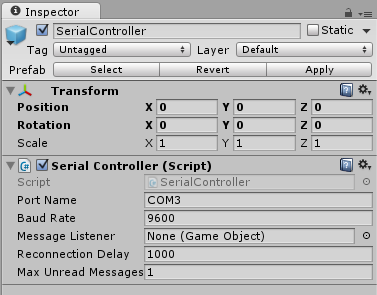

Want to connect your Arduino to Unity over a COM port?
Ardity allows bidirectional communication over COM ports from Unity®.
(Previously known as: SerialCommUnity)How does it work?
Ardity creates a thread in which it polls a COM port, all data it receives is stored in a shared thread-safe queue.
Later, your Unity program must either configure a callback that is invoked each time
data is available, or call ReadSerialMessage() which dequeues
the next message of this queue. You choose.
You can also send data to the COM port, use SendSerialMessage().
What do I need to do in Unity?
There are some sample scenes inside the Unity package, they are a good starting point, but
basically what you need to get Ardity up and running is adding the SerialController
script to one of your GameObjects:

If you let the "Message Listener" field unset, then you need to poll Ardity each time you want to get a message.
If you want Ardity to automatically call your own callback whenever a message arrives, then set that field to a GameObject that has the following two functions:
public class SampleMessageListener : MonoBehaviour
{
// Invoked when a line of data is received from the serial device.
void OnMessageArrived(string msg)
{
...
}
// Invoked when a connect/disconnect event occurs. The parameter 'success'
// will be 'true' upon connection, and 'false' upon disconnection or
// failure to connect.
void OnConnectionEvent(bool success)
{
...
}
}
Arduino sample code
The Arduino code necessary for making communication with Ardity
possible is straightforward, use the Serial.println() function.
Here is an example of an Arduino program that works well with this library:
unsigned long last_time = 0;
void setup()
{
Serial.begin(9600);
}
void loop()
{
// Print a heartbeat
if (millis() > last_time + 2000)
{
Serial.println("Arduino is alive!!");
last_time = millis();
}
// Send some message when I receive an 'A' or a 'Z'.
switch (Serial.read())
{
case 'A':
Serial.println("That's the first letter of the abecedarium.");
break;
case 'Z':
Serial.println("That's the last letter of the abecedarium.");
break;
}
}
Side notes:
By default, Unity uses a subset of the .NET framework, so if you get this error message:
Assets/Ardity/Scripts/SerialThread.cs(9,17): error CS0234: The type or namespace name 'Ports' does not exist in the namespace 'System.IO'. Are you missing an assembly reference?
It's because the current "API Compatibility Level" of your Unity project is set to ".NET 2.0 Subset", which doesn't contain the classes necessary for serial communication.
To solve the problem, go to
Edit->Project Settings->Player, and under "Other Settings" find an option that reads "Api Compatibility Level" and change it from ".NET 2.0 Subset" to ".NET 2.0".- Does this library only support communication based on lines of strings? Yes, but you can change it easily to support your own protocol. Check the
SerialThreadscript.